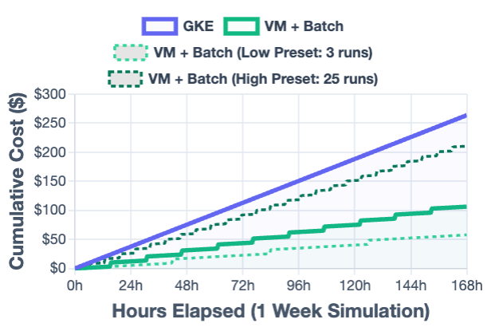

Galaxy on AnVIL
A familiar Galaxy, on AnVIL's secure cloud — without managing infrastructure.
Architecture
Terra / AnVIL Workspace
↓ GCE instance metadata
Galaxy VM — e2-standard-4, single node
Galaxy
TPV dispatcher
RKE2 + Helm
CloudNativePG
NFS Ganesha
CVMFS ref data
↓ jobs larger than 1 core / 4 GB
Google Cloud Batch — right-sized VMs, on demand
Batch workers mount the same NFS export and CVMFS reference data, so a tool sees an identical filesystem on or off the node.
- No idle cluster — one small VM, always on
Deployment: Then & Now
Then
- ~10 chained playbooks
- Fork to reconfigure
- Batch patched in after deploy
Now
- 2 roles, 1 entrypoint
- Compose to reconfigure
- Batch is a boolean flag
No SSH
the VM pulls its own configuration and converges
Maintenance, Simplified
~6 min
launch to a responding Galaxy
0
SSH sessions or manual steps
Each team changes only what it owns. Releases propagate themselves.
Elastic Compute with Google Cloud Batch
2–128 vCPUs
right-sized per job, on demand, then released
On the VM
- ≤ 1 core / 4 GB
Google Cloud Batch
- everything larger
Cost: Paying for Work, Not Uptime

Projected cumulative cost over one week. The managed cluster climbs whether or not anyone is analyzing data; VM + Batch steps up per job.
~60%
saved at a typical workload
~$57
per week — vs. ~$263 managed
Try It
1 command
launches a working Galaxy on Google Cloud — open source, start to finish
Where This Is Going
AI Co-Scientists: GalaxyAI, Orbit, and Where the Model Runs

One front door, two destinations — a configuration change, not a redeployment.
44 tools
exposed by Galaxy's MCP server — an agent inherits exactly a user's authorization
GalaxyAI routes each question to a specialist agent. Orbit + Loom bring the chat interface into Galaxy as an Interactive Tool.
Where does the model run?
Self-hosted
- No egress — GPU billed by the hour
Gemini for Government
- Stronger reasoning — per-token, egresses
Pending NIH policy guidance on LLMs with controlled-access data.